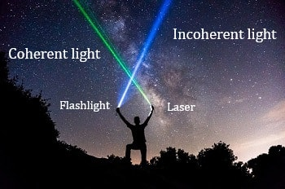

प्रकाश के कला संबद्ध स्रोत
यदि दो प्रकाश की किरणें समान आवृति की हैं और उनका कालांतर भी नियत हो तब उन्हें प्रकाश का कला सम्बद्ध श्रोत कहते हैं |
Light का interference होने के लिए प्रकाश के दो श्रोतों को कला - सम्बद्ध होना जरुरी है |

- किसी resistance बल्ब के अलग - अलग points से अलग -अलग frequency और phase में प्रकाश निकलता है जिनका आपस में कोई सम्बन्ध नहीं रहता है | इसलिए normal बल्ब से निकला प्रकाश incoherent light होता है |
- मगर laser में प्रत्येक atom के electron को एक साथ excite करते है और उन सबों से एक साथ लाइट निकलता है, इसलिए laser से केवल एक frequency का light निकलता है और उनका phase भी same होता है | इसलिए laser लाइट से निकला प्रकाश coherent light होता है |
- साथ ही जब laser लाइट को दो स्लिट से पास करते है तब same phase और anti phase, interaction के वजह से परदे पर bright और dark fringe प्राप्त होता है |
- मगर बल्ब से निकले प्रकाश में कोई phase relation नहीं होने की वजह से interference नहीं हो पता है और bright - dark lines प्राप्त नहीं होता है |
Q.What is Incoherent source of light.?
प्रकाश के असम्बद्ध श्रोत से आप क्या समझते हैं ?
- यदि दो प्रकाश की किरणें आसमान आवृति की हैं या उनका कालांतर नियत नहीं हो तब उन्हें प्रकाश का असम्बद्ध श्रोत कहते हैं |
- यदि प्रकाश का श्रोत असम्बद्ध है तब उनके बीच interference नहीं हो सकता है |